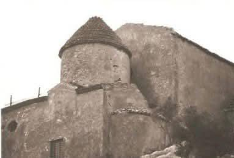

L’Antichissima Basilica dedicata alla Madonna del Granato sorge sul Monte Calpazio, che sovrasta l’intera Piana del Sele, e lo sguardo del visitatore si perde fino al Mar Tirreno dove si può ammirare l’intero Golfo di Salerno.
Abbandonata la città di Paestum (VIII sec.), i Paestani elessero questo monte come nuovo centro urbano e qui vi edificarono la loro nuova Cattedrale (IX sec.), costruita su un preesistente tempio greco posto a guardia della loro antica Città.

La Basilica paleocristiana originaria, ora sepolta per favorirne la conservazione, si trova sotto lo spazio immediatamente antistante la Chiesa attuale e si può notarne l’antico perimetro sul lato destro della piazza (guardando il Santuario), sagomato da una striscia di mattoncini; le uniche testimoni visibili di questa primitiva costruzione sono le colonne perimetrali che si trovano nei pressi del cancello di accesso al piazzale.
L’attuale impianto risale alla fine del X sec., quando la Città e la relativa Diocesi cambiarono il loro nome da Paestum a Caputaquis (poi Capaccio): la Chiesa è menzionata per la prima volta in una Bolla Papale del 967 che ne autorizzava la consacrazione dell’Altare con il titolo di Santa Maria Maggiore sul Calpazio.
Dopo la congiura dei Baroni, e la conseguente caduta del castello e distruzione del paese per mano di Federico II (1246), la Cattedrale, pur mantenendo inalterato il suo titolo, subì diversi periodi di declino. Il restauro più importante fu quello commissionato dal Vescovo De Nicolai (1710), che diede alla Basilica l’aspetto definitivo attuale.

La Chiesa si presenta tozza, irregolarmente tripartita da due imponenti contrafforti, con un impianto tipico delle Basiliche preromaniche, senza rosone e portico. Addossato alla sua struttura è presente un grande cenobio che nei secoli passati funse da residenza episcopale e capitolare.
Sul lato sinistro dell’edificio, all’altezza dell’area presbiteriale, si innalza il massiccio campanile a pianta quadrata, utilizzato più volte durante i secoli, finanche durante il secondo conflitto mondiale, come torre di difesa.
Con Regio Decreto del 1913 è dichiarata Monumento Nazionale.
Dal 1945, Capaccio cessa di essere sede episcopale e rientra nel territorio della Diocesi di Vallo della Lucania. Di conseguenza, con la fine della presenza del vescovo conobbe il suo ultimo periodo di incuria, durato fino all’inizio degli anni ’90 del secolo scorso.
All’inizio dei lavori per l’ultimo grande restauro (1990-2000), con Decreto Vescovile, è elevata a Santuario Diocesano.